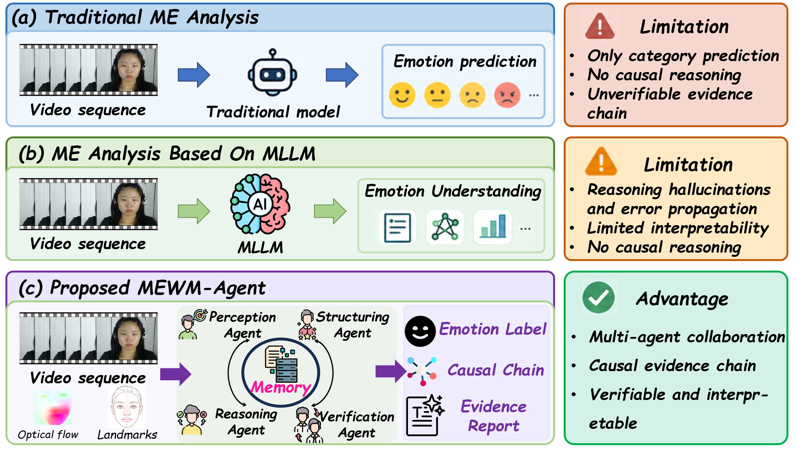
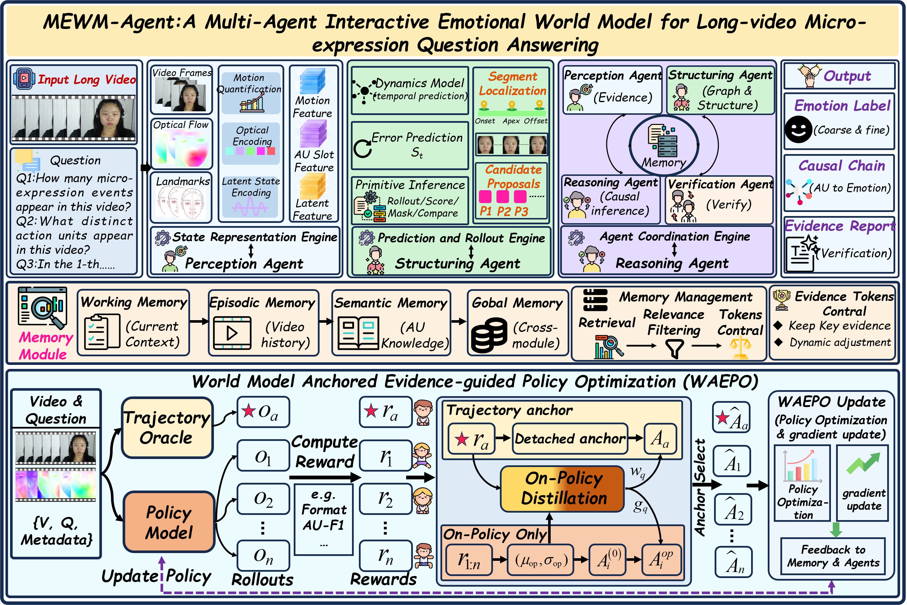
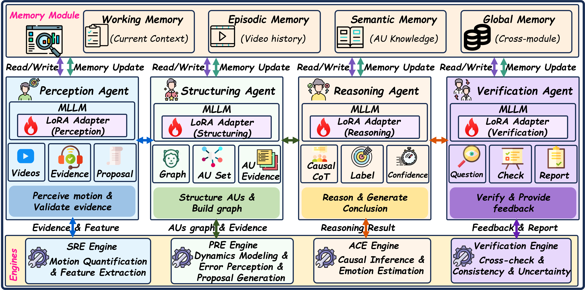
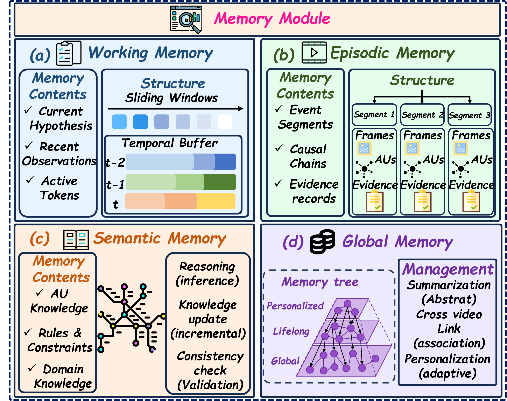
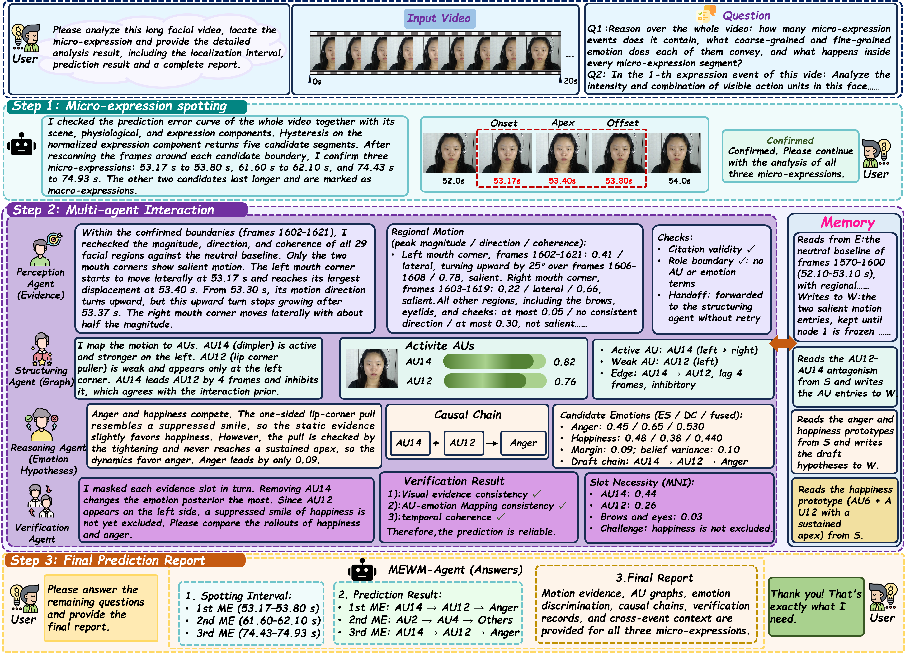

MEWM-Agent: A Multi-Agent Interactive Emotional World Model for Long-video Micro-expression Question Answering

Abstract
Long-video micro-expression question answering (ME-LVQA) requires spotting brief, low-amplitude micro-expressions (MEs) across thousands of frames, attributing them to emotional states, and generating a coherent global narrative. Although existing methods have improved ME representation and event spotting, they exhibit two fundamental limitations: they cannot reliably separate expression-related motion from head movement and confounding facial activity, and they do not sustain verifiable AU-to-emotion evidence chains across video segments. To address these limitations, we present MEWM-Agent, a multi-agent interactive emotional world model for ME-LVQA. A future event perception mechanism learns subject-specific facial dynamics from AU-centered dual-timescale historical states and fuses them with structured prediction deviations to generate candidate intervals. Building on this perception, four specialized agents progressively verify motion evidence, attribute AUs, and formulate emotion hypotheses. A four-layer working, episodic, semantic, and global memory system with evidence token regulation preserves cross-segment context and evidence provenance within a bounded token budget. To stabilize policy optimization, World Model Anchored Evidence-guided Policy Optimization (WAEPO) adopts On-Policy Distillation, in which a teacher policy supplies on-policy trajectories whose reward distribution tracks the student's, advantage baselines compute exclusively from student samples, and supervision enters through a decoupled likelihood term. Hierarchical process rewards further constrain policy updates by outcome correctness, evidence sufficiency, and causal consistency. Experiments on four long-video datasets demonstrate state-of-the-art performance in ME spotting, ME understanding, and ME-LVQA.
Comparison of ME Analysis Paradigms & Role-Isolated Agents
Why MEWM-Agent? Micro-expressions are transient, low-amplitude facial events interleaved with macro-expressions (MaEs), head motions, eye blinks, and illumination shifts across thousands of frames. Existing paradigms struggle to unify temporal localization and verifiable causal attribution:
- Traditional ME Analysis: Directly maps short cropped clips to discrete emotion categories without explicit causal reasoning or verifiable evidence chains.
- MLLM-based ME Analysis: Generates fluent free-form descriptions, yet suffers from AU hallucinations, error propagation, and missing subject-specific baselines across segments.
- Proposed MEWM-Agent: Grounds long-video spotting and question answering in an interactive emotional world model, coordinating four role-isolated agents over shared memory to produce verifiable emotion labels, AU→emotion causal chains, and audited evidence reports.

Comparison of ME analysis paradigms. (a) Traditional methods directly predict emotion categories without an evidence chain. (b) MLLM-based methods generate descriptions but suffer from reasoning hallucinations. (c) MEWM-Agent performs verifiable causal reasoning through multi-agent collaboration with shared memory.
Table I: Agent Roles, Engine Services, and Evidence Visibility. The Agent Coordination Engine (ACE) organizes reasoning along four progressive evidence levels. Strict role visibility projection prevents premature conclusion leakage and silent consensus while routing independent counterfactual challenges through world-model services.
| Agent | Core Responsibility | Engine Services | Visibility Constraint |
|---|---|---|---|
| Perception | Validate ME candidate boundaries and regional motion | SRE motion measurements; PRE salience | AU activations and emotion labels hidden |
| Structuring | Identify AU activations; construct AU temporal dynamic graph | SRE AU slot readouts; PRE interaction priors | Motion evidence and slot trajectories visible; emotion fields hidden |
| Reasoning | Generate emotion hypotheses; calibrate confidence; produce causal narration | PRE rollout, hypothesis scoring, slot masking | Phase-gated evidence visible; challenges self-directed only |
| Critic-verification | Assess hypothesis likelihood and AU slot necessity via counterfactual masking | PRE rollout, scoring, masking, counterfactual comparison | Emotion hypotheses and supporting evidence visible; final answer hidden |
Architecture: Emotional World Model & Long-Context Memory
Unified World-Model State Space. MEWM-Agent interconnects three core engines with a four-layer memory hierarchy and evidence-guided reinforcement learning:
(1) the State Representation Engine (SRE) encodes frame-wise observations into AU-centered dual-timescale states zt = (zts, ztm, zte) separating slow subject-specific baselines from fast transient facial motion;
(2) the Prediction and Rollout Engine (PRE) models subject-specific stationary dynamics, removes scene and physiological fluctuations to compute the normalized decomposed prediction error St for future event perception, and provides emotion-conditioned trajectory rollouts; and
(3) the Agent Coordination Engine (ACE) orchestrates four specialized agents trained via WAEPO with On-Policy Distillation (OPD) and Student-Informed Teacher Training (SITT).

Overall architecture of MEWM-Agent. SRE encodes AU-centered dual-timescale states, PRE derives ME candidates via the decomposed prediction error St, ACE coordinates four role-isolated agents over a four-layer memory system, and WAEPO optimizes the policy through On-Policy Distillation (OPD) with cascaded process rewards.
Role-Isolated Multi-Agent Collaboration

Role-isolated multi-agent framework. Four MLLMs equipped with role-specific LoRA adapters coordinate through shared memory and engine services: the perception agent validates motion evidence, the structuring agent constructs AU temporal dynamic graphs, the reasoning agent generates causal CoT chains and emotion labels, and the verification agent returns audited evidence reports via counterfactual slot masking.
Four-Layer Long-Context Memory System
Sustaining subject-specific baselines and cross-segment context over thousands of frames requires structured memory management within a bounded token budget. MEWM-Agent organizes evidence across four complementary stores:
- Working Memory (𝕎): Maintains proposal-level active reasoning states, sliding-window observations, key phase frames, and error indices for boundary backtracking.
- Episodic Memory (𝔼): Stores verified event segments, AU structures, causal chains, and out-of-segment neutral baselines in an append-only tree across the video timeline.
- Semantic Memory (𝕊): Accumulates versioned FACS AU constraints, antagonism priors, emotion prototypes, and verified rollout precedents without leaking current-sample answers.
- Global Memory (𝔾): Coordinates 𝕎, 𝔼, and 𝕊 through relevance filtering, personalization links, and dynamic evidence token regulation.

Four-layer memory module. (a) Working Memory, (b) Episodic Memory, (c) Semantic Memory, and (d) Global Memory with cross-video personalization and token budget regulation.
Key Architectural Takeaways
- AU-centered dual-timescale states decouple transient micro-expression motion from subject-specific baseline drift and head movement.
- Role-isolated perception, structuring, reasoning, and heterogeneous critic-verification agents enforce verifiable AU→emotion causal chains.
- Four-layer memory preserves cross-segment baselines and evidence provenance within a strictly bounded token budget.
How Well Does MEWM-Agent Perform?
Long-Video MaE & ME Spotting (Protocol 1)
Table II: Long-Video MaE and ME Spotting Results (F1spot, IoU ≥ 0.5) of Traditional Methods and MLLMs on CAS(ME)2, SAMM-LV, CAS(ME)3, and 4DME.
MEWM-Agent-T denotes the SITT-refined 30B teacher (Qwen3-VL-30B-A3B), and MEWM-Agent denotes our 7B student (Qwen2.5-VL-7B) after WAEPO On-Policy Distillation. Overall columns are highlighted, and the best student performance on each metric is boxed.
| Method | CAS(ME)2 | SAMM-LV | CAS(ME)3 | 4DME | ||||||||
|---|---|---|---|---|---|---|---|---|---|---|---|---|
| MaE↑ | ME↑ | Overall↑ | MaE↑ | ME↑ | Overall↑ | MaE↑ | ME↑ | Overall↑ | MaE↑ | ME↑ | Overall↑ | |
| ● Traditional Spotting Methods | ||||||||||||
| MDMD† | 0.120 | 0.008 | 0.038 | 0.063 | 0.036 | 0.045 | — | — | — | — | — | — |
| SOFTNet† | 0.241 | 0.117 | 0.202 | 0.217 | 0.152 | 0.188 | — | — | — | — | — | — |
| LSSNet† | 0.377 | 0.042 | 0.325 | 0.281 | 0.131 | 0.238 | — | — | — | — | — | — |
| ● Closed-source MLLMs | ||||||||||||
| GPT-4o-mini | 0.289 | 0.119 | 0.216 | 0.243 | 0.097 | 0.182 | 0.223 | 0.087 | 0.165 | 0.207 | 0.081 | 0.153 |
| GPT-4o | 0.354 | 0.148 | 0.263 | 0.298 | 0.122 | 0.219 | 0.274 | 0.110 | 0.201 | 0.253 | 0.103 | 0.186 |
| Gemini-2.5-Flash | 0.267 | 0.111 | 0.201 | 0.224 | 0.091 | 0.168 | 0.206 | 0.083 | 0.155 | 0.191 | 0.077 | 0.143 |
| Gemini-2.5-Pro | 0.328 | 0.137 | 0.246 | 0.276 | 0.113 | 0.205 | 0.254 | 0.103 | 0.188 | 0.235 | 0.096 | 0.174 |
| Gemini-3-Flash | 0.311 | 0.129 | 0.233 | 0.261 | 0.106 | 0.195 | 0.240 | 0.097 | 0.178 | 0.222 | 0.090 | 0.165 |
| Gemini-3-Pro | 0.371 | 0.154 | 0.275 | 0.312 | 0.130 | 0.231 | 0.287 | 0.119 | 0.213 | 0.265 | 0.110 | 0.197 |
| Claude-Sonnet-4.5 | 0.336 | 0.142 | 0.252 | 0.283 | 0.118 | 0.209 | 0.260 | 0.107 | 0.192 | 0.241 | 0.099 | 0.178 |
| ● Open-source MLLMs | ||||||||||||
| Qwen2.5-VL-7B | 0.328 | 0.208 | 0.277 | 0.276 | 0.178 | 0.244 | 0.254 | 0.162 | 0.224 | 0.235 | 0.152 | 0.207 |
| Qwen2.5-Omni-7B | 0.342 | 0.218 | 0.289 | 0.288 | 0.186 | 0.253 | 0.265 | 0.170 | 0.233 | 0.245 | 0.158 | 0.216 |
| Qwen2.5-VL-32B | 0.376 | 0.331 | 0.360 | 0.317 | 0.284 | 0.306 | 0.292 | 0.257 | 0.281 | 0.270 | 0.236 | 0.260 |
| Qwen3-VL-8B | 0.356 | 0.225 | 0.302 | 0.300 | 0.194 | 0.261 | 0.276 | 0.176 | 0.241 | 0.256 | 0.164 | 0.224 |
| Qwen3-VL-30B | 0.392 | 0.352 | 0.380 | 0.331 | 0.305 | 0.323 | 0.304 | 0.275 | 0.296 | 0.281 | 0.249 | 0.272 |
| GLM-4.1V-9B | 0.365 | 0.232 | 0.311 | 0.308 | 0.199 | 0.268 | 0.283 | 0.181 | 0.248 | 0.262 | 0.169 | 0.231 |
| ● Proposed Emotional World Model Agents | ||||||||||||
| MEWM-Agent-T (Teacher) | 0.461 | 0.397 | 0.434 | 0.421 | 0.347 | 0.389 | 0.374 | 0.312 | 0.349 | 0.338 | 0.284 | 0.316 |
| MEWM-Agent (Ours) | 0.429 | 0.363 | 0.401 | 0.392 | 0.314 | 0.358 | 0.347 | 0.281 | 0.319 | 0.312 | 0.253 | 0.287 |
Note: MaE and ME are counted separately, and Overall merges both counts. † denotes results cited from the original papers, which cover only CAS(ME)2 and SAMM-LV. All MLLMs perform zero-shot spotting with identical frame sampling and unified prompts.
Interval Micro-Expression Understanding on GT & TP Intervals (Protocol 2)
Table III: Coarse- and Fine-Grained Emotion Understanding Results on GT Intervals (BL: BLEU; RL: ROUGE-L). Evaluated across CAS(ME)2, SAMM-LV, CAS(ME)3, and 4DME using macro-averaged F1 and unweighted average recall (UAR) for coarse- and fine-grained emotion recognition, alongside BLEU and ROUGE-L for AU-grounded causal descriptions.
| Method | CAS(ME)2 | SAMM-LV | CAS(ME)3 | 4DME | ||||||||||||||||||||
|---|---|---|---|---|---|---|---|---|---|---|---|---|---|---|---|---|---|---|---|---|---|---|---|---|
| Coarse | Fine | Text | Coarse | Fine | Text | Coarse | Fine | Text | Coarse | Fine | Text | |||||||||||||
| F1↑ | UAR↑ | F1↑ | UAR↑ | BL↑ | RL↑ | F1↑ | UAR↑ | F1↑ | UAR↑ | BL↑ | RL↑ | F1↑ | UAR↑ | F1↑ | UAR↑ | BL↑ | RL↑ | F1↑ | UAR↑ | F1↑ | UAR↑ | BL↑ | RL↑ | |
| ● Closed-source MLLMs | ||||||||||||||||||||||||
| GPT-4o-mini | 0.335 | 0.356 | 0.161 | 0.186 | 0.095 | 0.214 | 0.302 | 0.330 | 0.143 | 0.166 | 0.084 | 0.196 | 0.282 | 0.305 | 0.136 | 0.155 | 0.080 | 0.183 | 0.262 | 0.280 | 0.127 | 0.145 | 0.074 | 0.165 |
| GPT-4o | 0.408 | 0.433 | 0.196 | 0.226 | 0.116 | 0.260 | 0.368 | 0.402 | 0.174 | 0.202 | 0.102 | 0.239 | 0.343 | 0.371 | 0.165 | 0.189 | 0.097 | 0.223 | 0.319 | 0.341 | 0.155 | 0.176 | 0.090 | 0.201 |
| Gemini-2.5-Flash | 0.312 | 0.331 | 0.150 | 0.173 | 0.089 | 0.199 | 0.281 | 0.307 | 0.133 | 0.154 | 0.078 | 0.183 | 0.262 | 0.283 | 0.126 | 0.144 | 0.074 | 0.170 | 0.244 | 0.260 | 0.118 | 0.134 | 0.069 | 0.154 |
| Gemini-2.5-Pro | 0.381 | 0.405 | 0.183 | 0.211 | 0.108 | 0.243 | 0.344 | 0.376 | 0.163 | 0.189 | 0.095 | 0.224 | 0.321 | 0.347 | 0.154 | 0.177 | 0.091 | 0.209 | 0.298 | 0.319 | 0.145 | 0.165 | 0.084 | 0.188 |
| Gemini-3-Flash | 0.361 | 0.384 | 0.174 | 0.200 | 0.103 | 0.230 | 0.326 | 0.356 | 0.154 | 0.179 | 0.090 | 0.212 | 0.304 | 0.329 | 0.146 | 0.167 | 0.086 | 0.198 | 0.283 | 0.302 | 0.137 | 0.156 | 0.080 | 0.178 |
| Gemini-3-Pro | 0.431 | 0.470 | 0.212 | 0.242 | 0.123 | 0.281 | 0.389 | 0.423 | 0.184 | 0.214 | 0.117 | 0.244 | 0.362 | 0.391 | 0.171 | 0.196 | 0.101 | 0.230 | 0.337 | 0.361 | 0.158 | 0.182 | 0.097 | 0.210 |
| Claude-Sonnet-4.5 | 0.391 | 0.415 | 0.188 | 0.217 | 0.111 | 0.249 | 0.353 | 0.385 | 0.167 | 0.194 | 0.098 | 0.229 | 0.329 | 0.356 | 0.158 | 0.181 | 0.093 | 0.214 | 0.306 | 0.327 | 0.149 | 0.169 | 0.086 | 0.193 |
| ● Open-source MLLMs | ||||||||||||||||||||||||
| Qwen2.5-VL-7B | 0.423 | 0.458 | 0.208 | 0.240 | 0.213 | 0.263 | 0.384 | 0.414 | 0.186 | 0.216 | 0.189 | 0.250 | 0.357 | 0.384 | 0.169 | 0.192 | 0.172 | 0.229 | 0.332 | 0.362 | 0.160 | 0.185 | 0.163 | 0.216 |
| Qwen2.5-Omni-7B | 0.442 | 0.478 | 0.217 | 0.250 | 0.228 | 0.275 | 0.401 | 0.432 | 0.194 | 0.226 | 0.198 | 0.261 | 0.373 | 0.401 | 0.176 | 0.201 | 0.183 | 0.239 | 0.346 | 0.378 | 0.167 | 0.193 | 0.174 | 0.225 |
| Qwen2.5-VL-32B | 0.538 | 0.580 | 0.264 | 0.302 | 0.271 | 0.338 | 0.488 | 0.524 | 0.237 | 0.272 | 0.241 | 0.315 | 0.455 | 0.489 | 0.216 | 0.243 | 0.224 | 0.291 | 0.424 | 0.461 | 0.203 | 0.234 | 0.208 | 0.272 |
| Qwen3-VL-8B | 0.459 | 0.496 | 0.225 | 0.260 | 0.243 | 0.285 | 0.416 | 0.449 | 0.202 | 0.235 | 0.211 | 0.271 | 0.387 | 0.416 | 0.183 | 0.208 | 0.196 | 0.248 | 0.360 | 0.393 | 0.173 | 0.201 | 0.182 | 0.234 |
| Qwen3-VL-30B | 0.591 | 0.634 | 0.283 | 0.323 | 0.296 | 0.384 | 0.538 | 0.572 | 0.260 | 0.296 | 0.264 | 0.341 | 0.502 | 0.541 | 0.245 | 0.281 | 0.249 | 0.324 | 0.468 | 0.498 | 0.227 | 0.260 | 0.231 | 0.292 |
| GLM-4.1V-9B | 0.451 | 0.491 | 0.220 | 0.253 | 0.219 | 0.287 | 0.409 | 0.440 | 0.198 | 0.228 | 0.197 | 0.257 | 0.381 | 0.415 | 0.182 | 0.208 | 0.185 | 0.245 | 0.354 | 0.381 | 0.169 | 0.196 | 0.171 | 0.221 |
| ● Proposed Emotional World Model Agents | ||||||||||||||||||||||||
| MEWM-Agent-T (Teacher) | 0.678 | 0.718 | 0.441 | 0.469 | 0.452 | 0.591 | 0.624 | 0.651 | 0.402 | 0.429 | 0.412 | 0.541 | 0.615 | 0.647 | 0.389 | 0.419 | 0.405 | 0.542 | 0.661 | 0.696 | 0.421 | 0.453 | 0.434 | 0.583 |
| MEWM-Agent (Ours) | 0.641 | 0.673 | 0.398 | 0.431 | 0.413 | 0.549 | 0.578 | 0.609 | 0.359 | 0.388 | 0.373 | 0.496 | 0.568 | 0.601 | 0.347 | 0.378 | 0.363 | 0.496 | 0.619 | 0.652 | 0.378 | 0.411 | 0.395 | 0.538 |
Table IV: Coarse- and Fine-Grained Emotion Understanding Results on TP Intervals (BL: BLEU; RL: ROUGE-L). TP-interval evaluation reflects understanding conditioned on spotted intervals. MEWM-Agent exhibits substantially smaller GT-to-TP degradation than all baselines because predictive spotting captures complete onset-apex-offset motion phases.
| Method | CAS(ME)2 | SAMM-LV | CAS(ME)3 | 4DME | ||||||||||||||||||||
|---|---|---|---|---|---|---|---|---|---|---|---|---|---|---|---|---|---|---|---|---|---|---|---|---|
| Coarse | Fine | Text | Coarse | Fine | Text | Coarse | Fine | Text | Coarse | Fine | Text | |||||||||||||
| F1↑ | UAR↑ | F1↑ | UAR↑ | BL↑ | RL↑ | F1↑ | UAR↑ | F1↑ | UAR↑ | BL↑ | RL↑ | F1↑ | UAR↑ | F1↑ | UAR↑ | BL↑ | RL↑ | F1↑ | UAR↑ | F1↑ | UAR↑ | BL↑ | RL↑ | |
| ● Closed-source MLLMs | ||||||||||||||||||||||||
| GPT-4o-mini | 0.272 | 0.283 | 0.131 | 0.148 | 0.077 | 0.170 | 0.253 | 0.280 | 0.120 | 0.142 | 0.071 | 0.166 | 0.228 | 0.246 | 0.111 | 0.127 | 0.065 | 0.150 | 0.217 | 0.233 | 0.105 | 0.121 | 0.062 | 0.136 |
| GPT-4o | 0.331 | 0.344 | 0.159 | 0.180 | 0.094 | 0.207 | 0.308 | 0.340 | 0.146 | 0.173 | 0.086 | 0.202 | 0.277 | 0.299 | 0.135 | 0.154 | 0.079 | 0.182 | 0.264 | 0.283 | 0.128 | 0.147 | 0.075 | 0.165 |
| Gemini-2.5-Flash | 0.253 | 0.263 | 0.121 | 0.138 | 0.072 | 0.158 | 0.235 | 0.260 | 0.112 | 0.132 | 0.066 | 0.154 | 0.212 | 0.228 | 0.103 | 0.118 | 0.060 | 0.139 | 0.202 | 0.216 | 0.098 | 0.112 | 0.057 | 0.126 |
| Gemini-2.5-Pro | 0.309 | 0.322 | 0.149 | 0.168 | 0.088 | 0.194 | 0.288 | 0.318 | 0.137 | 0.162 | 0.080 | 0.189 | 0.259 | 0.280 | 0.126 | 0.144 | 0.074 | 0.170 | 0.247 | 0.265 | 0.120 | 0.137 | 0.070 | 0.154 |
| Gemini-3-Flash | 0.293 | 0.305 | 0.141 | 0.160 | 0.083 | 0.183 | 0.273 | 0.301 | 0.129 | 0.153 | 0.076 | 0.179 | 0.245 | 0.265 | 0.120 | 0.136 | 0.070 | 0.161 | 0.234 | 0.251 | 0.113 | 0.130 | 0.066 | 0.146 |
| Gemini-3-Pro | 0.354 | 0.385 | 0.175 | 0.203 | 0.102 | 0.235 | 0.314 | 0.343 | 0.149 | 0.171 | 0.095 | 0.198 | 0.291 | 0.309 | 0.136 | 0.155 | 0.081 | 0.186 | 0.277 | 0.295 | 0.128 | 0.150 | 0.080 | 0.170 |
| Claude-Sonnet-4.5 | 0.317 | 0.330 | 0.152 | 0.172 | 0.090 | 0.198 | 0.295 | 0.326 | 0.140 | 0.166 | 0.082 | 0.194 | 0.265 | 0.286 | 0.129 | 0.148 | 0.076 | 0.174 | 0.253 | 0.271 | 0.123 | 0.141 | 0.072 | 0.158 |
| ● Open-source MLLMs | ||||||||||||||||||||||||
| Qwen2.5-VL-7B | 0.371 | 0.402 | 0.189 | 0.212 | 0.179 | 0.234 | 0.324 | 0.349 | 0.158 | 0.184 | 0.158 | 0.218 | 0.322 | 0.346 | 0.150 | 0.173 | 0.147 | 0.206 | 0.284 | 0.306 | 0.136 | 0.157 | 0.139 | 0.183 |
| Qwen2.5-Omni-7B | 0.386 | 0.421 | 0.197 | 0.222 | 0.191 | 0.244 | 0.337 | 0.363 | 0.164 | 0.191 | 0.166 | 0.226 | 0.335 | 0.361 | 0.155 | 0.180 | 0.153 | 0.215 | 0.296 | 0.319 | 0.142 | 0.162 | 0.144 | 0.191 |
| Qwen2.5-VL-32B | 0.463 | 0.506 | 0.233 | 0.261 | 0.236 | 0.293 | 0.403 | 0.437 | 0.197 | 0.231 | 0.209 | 0.269 | 0.401 | 0.433 | 0.187 | 0.216 | 0.194 | 0.252 | 0.352 | 0.384 | 0.169 | 0.194 | 0.183 | 0.228 |
| Qwen3-VL-8B | 0.397 | 0.432 | 0.198 | 0.224 | 0.197 | 0.249 | 0.348 | 0.378 | 0.169 | 0.198 | 0.172 | 0.231 | 0.347 | 0.372 | 0.159 | 0.185 | 0.161 | 0.220 | 0.304 | 0.329 | 0.145 | 0.166 | 0.151 | 0.196 |
| Qwen3-VL-30B | 0.519 | 0.558 | 0.244 | 0.285 | 0.258 | 0.338 | 0.448 | 0.481 | 0.214 | 0.248 | 0.227 | 0.287 | 0.418 | 0.459 | 0.208 | 0.240 | 0.214 | 0.275 | 0.384 | 0.412 | 0.189 | 0.216 | 0.199 | 0.247 |
| GLM-4.1V-9B | 0.394 | 0.431 | 0.196 | 0.223 | 0.188 | 0.259 | 0.355 | 0.378 | 0.172 | 0.199 | 0.163 | 0.223 | 0.325 | 0.359 | 0.155 | 0.179 | 0.157 | 0.212 | 0.308 | 0.336 | 0.148 | 0.169 | 0.148 | 0.194 |
| ● Proposed Emotional World Model Agents | ||||||||||||||||||||||||
| MEWM-Agent-T (Teacher) | 0.613 | 0.681 | 0.339 | 0.364 | 0.318 | 0.473 | 0.564 | 0.598 | 0.307 | 0.331 | 0.347 | 0.475 | 0.589 | 0.621 | 0.379 | 0.408 | 0.388 | 0.516 | 0.551 | 0.581 | 0.354 | 0.379 | 0.362 | 0.481 |
| MEWM-Agent (Ours) | 0.571 | 0.643 | 0.302 | 0.329 | 0.287 | 0.431 | 0.521 | 0.559 | 0.270 | 0.294 | 0.315 | 0.432 | 0.547 | 0.578 | 0.341 | 0.369 | 0.354 | 0.471 | 0.509 | 0.539 | 0.317 | 0.343 | 0.329 | 0.438 |
End-to-End ME-LVQA: Event Counting, AU Set Prediction & STRS (Protocol 3)
Table V: ME-LVQA Results of Event Counting, AU Set Prediction, and End-to-End Evaluation on CAS(ME)2. MEWM-Agent cuts total-count MAE by 53.8% relative to Qwen3-VL-30B (3.554 vs. 7.687), achieves an ME-count MAE of 0.446, and lifts end-to-end STRS to 0.207 (1.92× the strongest baseline).
| Method | Total Count | ME Count | MaE Count | AU Set | End-to-End | ||||||
|---|---|---|---|---|---|---|---|---|---|---|---|
| MAE↓ | RMSE↓ | MAE↓ | RMSE↓ | MAE↓ | RMSE↓ | F1↑ | Jacc.↑ | F1spot↑ | F1regTP↑ | STRS↑ | |
| ● Closed-source MLLMs | |||||||||||
| GPT-4o-mini | 11.342 | 13.299 | 7.861 | 10.312 | 6.709 | 8.403 | 0.212 | 0.134 | 0.119 | 0.272 | 0.032 |
| GPT-4o | 10.284 | 12.059 | 7.126 | 9.346 | 6.079 | 7.616 | 0.234 | 0.148 | 0.148 | 0.331 | 0.049 |
| Gemini-2.5-Flash | 11.764 | 13.797 | 8.156 | 10.702 | 6.959 | 8.716 | 0.204 | 0.129 | 0.111 | 0.253 | 0.028 |
| Gemini-2.5-Pro | 10.632 | 12.472 | 7.366 | 9.669 | 6.293 | 7.882 | 0.226 | 0.143 | 0.137 | 0.309 | 0.042 |
| Gemini-3-Flash | 10.933 | 12.818 | 7.581 | 9.937 | 6.461 | 8.102 | 0.220 | 0.139 | 0.129 | 0.293 | 0.038 |
| Gemini-3-Pro | 9.726 | 11.541 | 6.678 | 8.858 | 5.744 | 7.294 | 0.256 | 0.163 | 0.154 | 0.354 | 0.055 |
| Claude-Sonnet-4.5 | 10.497 | 12.313 | 7.279 | 9.549 | 6.211 | 7.779 | 0.229 | 0.145 | 0.142 | 0.317 | 0.045 |
| ● Open-source MLLMs | |||||||||||
| Qwen2.5-VL-7B | 9.621 | 11.503 | 6.591 | 8.847 | 5.762 | 7.303 | 0.358 | 0.230 | 0.172 | 0.365 | 0.063 |
| Qwen2.5-Omni-7B | 9.408 | 11.249 | 6.442 | 8.671 | 5.633 | 7.144 | 0.368 | 0.236 | 0.179 | 0.381 | 0.068 |
| Qwen2.5-VL-32B | 8.431 | 10.127 | 5.763 | 7.814 | 4.998 | 6.398 | 0.401 | 0.257 | 0.213 | 0.439 | 0.093 |
| Qwen3-VL-8B | 9.214 | 11.013 | 6.322 | 8.527 | 5.436 | 6.982 | 0.374 | 0.239 | 0.185 | 0.397 | 0.073 |
| Qwen3-VL-30B | 7.687 | 9.341 | 5.194 | 7.218 | 4.541 | 5.869 | 0.436 | 0.281 | 0.224 | 0.482 | 0.108 |
| GLM-4.1V-9B | 9.423 | 11.208 | 6.441 | 8.594 | 5.502 | 7.003 | 0.369 | 0.236 | 0.191 | 0.392 | 0.075 |
| ● Proposed Emotional World Model Agents | |||||||||||
| MEWM-Agent-T (Teacher) | 2.891 | 3.987 | 0.371 | 0.784 | 2.543 | 3.419 | 0.524 | 0.371 | 0.397 | 0.613 | 0.243 |
| MEWM-Agent (Ours) | 3.554 | 4.749 | 0.446 | 0.927 | 3.109 | 4.163 | 0.487 | 0.341 | 0.363 | 0.571 | 0.207 |
Table VI: ME-LVQA Results of Event Counting, AU Set Prediction, and End-to-End Evaluation on SAMM-LV. MEWM-Agent reduces total-count MAE by 52.7% relative to Qwen3-VL-30B and achieves an STRS of 0.164 (2.13× the strongest baseline).
| Method | Total Count | ME Count | MaE Count | AU Set | End-to-End | ||||||
|---|---|---|---|---|---|---|---|---|---|---|---|
| MAE↓ | RMSE↓ | MAE↓ | RMSE↓ | MAE↓ | RMSE↓ | F1↑ | Jacc.↑ | F1spot↑ | F1regTP↑ | STRS↑ | |
| ● Closed-source MLLMs | |||||||||||
| GPT-4o-mini | 11.743 | 13.742 | 8.137 | 10.618 | 6.928 | 8.663 | 0.198 | 0.124 | 0.097 | 0.253 | 0.025 |
| GPT-4o | 10.636 | 12.446 | 7.382 | 9.621 | 6.277 | 7.853 | 0.218 | 0.137 | 0.122 | 0.308 | 0.038 |
| Gemini-2.5-Flash | 12.167 | 14.242 | 8.444 | 11.001 | 7.179 | 8.978 | 0.190 | 0.120 | 0.091 | 0.235 | 0.021 |
| Gemini-2.5-Pro | 11.002 | 12.867 | 7.629 | 9.954 | 6.489 | 8.108 | 0.211 | 0.132 | 0.113 | 0.288 | 0.033 |
| Gemini-3-Flash | 11.311 | 13.233 | 7.837 | 10.217 | 6.673 | 8.339 | 0.205 | 0.129 | 0.106 | 0.273 | 0.029 |
| Gemini-3-Pro | 10.057 | 11.869 | 6.918 | 9.146 | 5.921 | 7.469 | 0.241 | 0.152 | 0.130 | 0.314 | 0.041 |
| Claude-Sonnet-4.5 | 10.873 | 12.723 | 7.543 | 9.822 | 6.407 | 8.019 | 0.213 | 0.134 | 0.118 | 0.295 | 0.035 |
| ● Open-source MLLMs | |||||||||||
| Qwen2.5-VL-7B | 9.984 | 11.902 | 6.873 | 9.147 | 5.908 | 7.531 | 0.341 | 0.218 | 0.144 | 0.319 | 0.046 |
| Qwen2.5-Omni-7B | 9.772 | 11.627 | 6.724 | 8.941 | 5.773 | 7.362 | 0.349 | 0.224 | 0.151 | 0.334 | 0.050 |
| Qwen2.5-VL-32B | 8.817 | 10.543 | 6.029 | 8.146 | 5.212 | 6.643 | 0.383 | 0.246 | 0.178 | 0.386 | 0.068 |
| Qwen3-VL-8B | 9.631 | 11.449 | 6.613 | 8.814 | 5.681 | 7.246 | 0.356 | 0.228 | 0.156 | 0.347 | 0.055 |
| Qwen3-VL-30B | 8.049 | 9.726 | 5.487 | 7.512 | 4.784 | 6.114 | 0.418 | 0.268 | 0.185 | 0.419 | 0.077 |
| GLM-4.1V-9B | 9.817 | 11.601 | 6.728 | 8.892 | 5.742 | 7.271 | 0.348 | 0.223 | 0.162 | 0.352 | 0.057 |
| ● Proposed Emotional World Model Agents | |||||||||||
| MEWM-Agent-T (Teacher) | 3.112 | 4.213 | 0.428 | 0.892 | 2.694 | 3.521 | 0.498 | 0.349 | 0.347 | 0.564 | 0.196 |
| MEWM-Agent (Ours) | 3.804 | 5.106 | 0.512 | 1.083 | 3.292 | 4.397 | 0.461 | 0.318 | 0.314 | 0.521 | 0.164 |
Table VII: ME-LVQA Results of Event Counting, AU Set Prediction, and End-to-End Evaluation on CAS(ME)3. On the large-scale CAS(ME)3 corpus, MEWM-Agent cuts total-count MAE by 46.3% and elevates STRS to 0.154 (2.33× the strongest baseline).
| Method | Total Count | ME Count | MaE Count | AU Set | End-to-End | ||||||
|---|---|---|---|---|---|---|---|---|---|---|---|
| MAE↓ | RMSE↓ | MAE↓ | RMSE↓ | MAE↓ | RMSE↓ | F1↑ | Jacc.↑ | F1spot↑ | F1regTP↑ | STRS↑ | |
| ● Closed-source MLLMs | |||||||||||
| GPT-4o-mini | 13.943 | 17.013 | 9.642 | 12.461 | 8.124 | 10.066 | 0.197 | 0.123 | 0.087 | 0.228 | 0.020 |
| GPT-4o | 12.641 | 15.423 | 8.742 | 11.291 | 7.359 | 9.128 | 0.217 | 0.136 | 0.110 | 0.277 | 0.030 |
| Gemini-2.5-Flash | 14.464 | 17.643 | 10.002 | 12.918 | 8.418 | 10.439 | 0.190 | 0.119 | 0.083 | 0.212 | 0.018 |
| Gemini-2.5-Pro | 13.074 | 15.943 | 9.037 | 11.683 | 7.608 | 9.443 | 0.210 | 0.132 | 0.103 | 0.259 | 0.027 |
| Gemini-3-Flash | 13.426 | 16.379 | 9.279 | 12.004 | 7.819 | 9.701 | 0.204 | 0.128 | 0.097 | 0.245 | 0.024 |
| Gemini-3-Pro | 11.846 | 14.627 | 8.174 | 10.636 | 6.869 | 8.558 | 0.239 | 0.151 | 0.119 | 0.291 | 0.035 |
| Claude-Sonnet-4.5 | 12.909 | 15.749 | 8.921 | 11.532 | 7.516 | 9.329 | 0.212 | 0.133 | 0.107 | 0.265 | 0.028 |
| ● Open-source MLLMs | |||||||||||
| Qwen2.5-VL-7B | 12.193 | 15.231 | 8.413 | 11.027 | 7.064 | 8.847 | 0.336 | 0.216 | 0.131 | 0.319 | 0.042 |
| Qwen2.5-Omni-7B | 11.914 | 14.902 | 8.227 | 10.794 | 6.903 | 8.643 | 0.344 | 0.221 | 0.138 | 0.332 | 0.046 |
| Qwen2.5-VL-32B | 10.831 | 13.559 | 7.447 | 9.782 | 6.281 | 7.851 | 0.378 | 0.243 | 0.154 | 0.368 | 0.059 |
| Qwen3-VL-8B | 11.689 | 14.633 | 8.074 | 10.584 | 6.782 | 8.487 | 0.349 | 0.224 | 0.142 | 0.346 | 0.048 |
| Qwen3-VL-30B | 9.892 | 12.491 | 6.803 | 9.041 | 5.773 | 7.243 | 0.414 | 0.265 | 0.167 | 0.396 | 0.066 |
| GLM-4.1V-9B | 12.287 | 15.089 | 8.492 | 11.137 | 7.126 | 8.913 | 0.342 | 0.219 | 0.146 | 0.324 | 0.046 |
| ● Proposed Emotional World Model Agents | |||||||||||
| MEWM-Agent-T (Teacher) | 4.319 | 5.724 | 0.451 | 0.946 | 3.927 | 4.968 | 0.453 | 0.305 | 0.312 | 0.589 | 0.184 |
| MEWM-Agent (Ours) | 5.317 | 6.982 | 0.538 | 1.124 | 4.793 | 6.041 | 0.418 | 0.286 | 0.281 | 0.547 | 0.154 |
Table VIII: ME-LVQA Results of Event Counting, AU Set Prediction, and End-to-End Evaluation on 4DME. MEWM-Agent reduces total-count MAE by 41.3% relative to Qwen3-VL-30B and achieves an STRS of 0.129 (2.22× the strongest baseline).
| Method | Total Count | ME Count | MaE Count | AU Set | End-to-End | ||||||
|---|---|---|---|---|---|---|---|---|---|---|---|
| MAE↓ | RMSE↓ | MAE↓ | RMSE↓ | MAE↓ | RMSE↓ | F1↑ | Jacc.↑ | F1spot↑ | F1regTP↑ | STRS↑ | |
| ● Closed-source MLLMs | |||||||||||
| GPT-4o-mini | 11.123 | 13.099 | 7.764 | 10.189 | 6.572 | 8.247 | 0.182 | 0.114 | 0.081 | 0.217 | 0.018 |
| GPT-4o | 10.081 | 11.869 | 7.032 | 9.239 | 5.948 | 7.477 | 0.201 | 0.126 | 0.103 | 0.264 | 0.027 |
| Gemini-2.5-Flash | 11.528 | 13.584 | 8.037 | 10.567 | 6.814 | 8.557 | 0.176 | 0.110 | 0.077 | 0.202 | 0.016 |
| Gemini-2.5-Pro | 10.416 | 12.273 | 7.271 | 9.563 | 6.154 | 7.742 | 0.194 | 0.122 | 0.096 | 0.247 | 0.024 |
| Gemini-3-Flash | 10.709 | 12.619 | 7.467 | 9.823 | 6.323 | 7.946 | 0.189 | 0.119 | 0.090 | 0.234 | 0.021 |
| Gemini-3-Pro | 9.536 | 11.317 | 6.551 | 8.734 | 5.618 | 7.153 | 0.223 | 0.140 | 0.110 | 0.277 | 0.030 |
| Claude-Sonnet-4.5 | 10.292 | 12.118 | 7.183 | 9.444 | 6.081 | 7.641 | 0.197 | 0.123 | 0.099 | 0.253 | 0.025 |
| ● Open-source MLLMs | |||||||||||
| Qwen2.5-VL-7B | 9.437 | 11.348 | 6.482 | 8.761 | 5.594 | 7.151 | 0.329 | 0.210 | 0.119 | 0.281 | 0.034 |
| Qwen2.5-Omni-7B | 9.228 | 11.092 | 6.329 | 8.573 | 5.467 | 6.983 | 0.337 | 0.216 | 0.125 | 0.294 | 0.037 |
| Qwen2.5-VL-32B | 8.312 | 9.987 | 5.671 | 7.741 | 4.894 | 6.279 | 0.371 | 0.238 | 0.149 | 0.338 | 0.050 |
| Qwen3-VL-8B | 9.081 | 10.913 | 6.218 | 8.426 | 5.351 | 6.849 | 0.343 | 0.220 | 0.130 | 0.304 | 0.039 |
| Qwen3-VL-30B | 7.621 | 9.283 | 5.147 | 7.124 | 4.481 | 5.808 | 0.381 | 0.244 | 0.158 | 0.367 | 0.058 |
| GLM-4.1V-9B | 9.264 | 11.047 | 6.341 | 8.489 | 5.412 | 6.891 | 0.335 | 0.214 | 0.134 | 0.305 | 0.040 |
| ● Proposed Emotional World Model Agents | |||||||||||
| MEWM-Agent-T (Teacher) | 3.627 | 4.819 | 0.483 | 1.014 | 3.198 | 3.993 | 0.428 | 0.289 | 0.284 | 0.551 | 0.156 |
| MEWM-Agent (Ours) | 4.469 | 5.915 | 0.573 | 1.197 | 3.901 | 4.827 | 0.392 | 0.264 | 0.253 | 0.509 | 0.129 |
Comparison Across Task Complexity Levels
Compounding Advantages from Spotting to QA. Evaluating performance across Level 1 (ME Spotting), Level 2 (Interval Emotion Understanding & Text Generation), and Level 3 (End-to-End ME-LVQA) reveals that MEWM-Agent's margin widens progressively with task complexity. Through On-Policy Distillation, our 7B student surpasses 30B/32B open-source backbones and proprietary MLLMs across all ten metrics, achieving 1.92×–2.33× higher composite STRS across the four benchmarks.

Task-level comparison of MEWM-Agent and MLLM baselines on CAS(ME)2 across three evaluation levels: Level 1 (long-video ME spotting), Level 2 (ME understanding and causal description), and Level 3 (end-to-end ME-LVQA). MEWM-Agent achieves the best results on all ten metrics.
Key Experimental Takeaways
- Subject-specific predictive dynamics, rather than raw parameter scale, overcome the MaE/ME imbalance and enable a 7B student to outperform 30B+ MLLMs on subtle ME spotting.
- AU-anchored descriptions yield 1.39× higher BLEU than Qwen3-VL-30B on CAS(ME)2 and markedly reduce GT-to-TP recognition degradation.
- Verified spotting and AU-graph filtering compound in ME-LVQA, cutting ME counting MAE to 0.446–0.573 and delivering 1.92×–2.33× higher STRS across all four datasets.
What Drives MEWM-Agent? Ablation & WAEPO Analysis
Ablation of Training Objectives
Table IX: Incremental and Leave-One-Out Ablation of Training Objectives on CAS(ME)2.
ℒsrp covers state representation and dynamics pretraining; ℒemo, ℒteacher, and ℒstudent denote emotion supervision, the SITT teacher alignment loss, and the WAEPO student policy loss, respectively.
| ℒsrp | ℒemo | ℒteacher | ℒstudent | F1spot↑ | F1regTP↑ | UARregTP↑ | AU F1↑ | Jacc.↑ | MAE↓ | RMSE↓ | BL↑ | RL↑ | STRS↑ |
|---|---|---|---|---|---|---|---|---|---|---|---|---|---|
| ● Incremental Addition | |||||||||||||
| × | × | × | × | 0.288 | 0.330 | 0.320 | 0.370 | 0.251 | 0.751 | 1.550 | 0.208 | 0.345 | 0.095 |
| ✓ | × | × | × | 0.338 | 0.385 | 0.380 | 0.444 | 0.308 | 0.578 | 1.182 | 0.239 | 0.384 | 0.130 |
| ✓ | ✓ | × | × | 0.355 | 0.458 | 0.468 | 0.452 | 0.315 | 0.539 | 1.111 | 0.270 | 0.416 | 0.163 |
| ✓ | ✓ | ✓ | × | 0.358 | 0.509 | 0.496 | 0.469 | 0.328 | 0.487 | 1.014 | 0.278 | 0.423 | 0.182 |
| ● Leave-One-Out & Full Model | |||||||||||||
| × | ✓ | ✓ | ✓ | 0.339 | 0.479 | 0.494 | 0.468 | 0.328 | 0.564 | 1.147 | 0.274 | 0.419 | 0.162 |
| ✓ | × | ✓ | ✓ | 0.352 | 0.449 | 0.463 | 0.476 | 0.334 | 0.518 | 1.071 | 0.271 | 0.415 | 0.158 |
| ✓ | ✓ | × | ✓ | 0.360 | 0.527 | 0.513 | 0.481 | 0.337 | 0.463 | 0.968 | 0.282 | 0.427 | 0.190 |
| ✓ | ✓ | ✓ | × | 0.358 | 0.509 | 0.496 | 0.469 | 0.328 | 0.487 | 1.014 | 0.278 | 0.423 | 0.182 |
| ✓ | ✓ | ✓ | ✓ | 0.363 | 0.571 | 0.528 | 0.487 | 0.341 | 0.446 | 0.927 | 0.287 | 0.431 | 0.207 |
Note: ✓/× indicate whether an objective is enabled. MAE and RMSE are ME counting errors. BL: BLEU; RL: ROUGE-L.
Heterogeneous Critic Base
Table X: Ablation of the Critic-Verification Base Model. Replacing a shared Qwen2.5-VL-7B critic with heterogeneous GLM-4.1V-9B-Thinking prevents shared inductive bias and lifts F1regTP by +0.107.
| Critic Base | F1spot↑ | F1regGT↑ | F1regTP↑ | STRS↑ |
|---|---|---|---|---|
| Qwen2.5-VL-7B (Homogeneous) | 0.350 | 0.613 | 0.464 | 0.162 |
| GLM-4.1V-9B-Thinking (Heterogeneous) | 0.363 | 0.641 | 0.571 | 0.207 |
| Gain of heterogeneous base | +0.013 | +0.028 | +0.107 | +0.045 |
Four-Layer Memory Ablation
Table XI: Ablation of the Memory Components on CAS(ME)2. Removing episodic memory 𝔼 causes the largest STRS drop (−0.064), while semantic memory 𝕊 governs GT emotion discrimination.
| 𝕎 | 𝔼 | 𝕊 | 𝔾 | F1spot↑ | F1regGT↑ | F1regTP↑ | STRS↑ |
|---|---|---|---|---|---|---|---|
| × | ✓ | ✓ | ✓ | 0.341 | 0.621 | 0.465 | 0.159 |
| ✓ | × | ✓ | ✓ | 0.320 | 0.610 | 0.448 | 0.143 |
| ✓ | ✓ | × | ✓ | 0.357 | 0.591 | 0.451 | 0.161 |
| ✓ | ✓ | ✓ | × | 0.361 | 0.631 | 0.481 | 0.174 |
| ✓ | ✓ | ✓ | ✓ | 0.363 | 0.641 | 0.571 | 0.207 |
WAEPO Policy Optimization & Hyperparameter Sensitivity (Tables XII & XIII)
Eliminating Advantage Inversion via On-Policy Distillation. Mixing high-reward anchor trajectories directly into group normalization inflates the baseline and inverts advantages for 22.4% of on-policy samples (V1), suppressing exploration. By computing advantage baselines exclusively from student samples, routing SITT-aligned teacher trajectories through a decoupled likelihood term with bounded teacher ratio Gt / G < 1, and enforcing PRE-derived cascaded rewards, WAEPO reduces advantage inversion ηinv to 0.3% (vs. 19.7% in GRPO and 10.9% in P-GRPO) while achieving peak end-to-end performance at G = 16, Gt = 8 (STRS = 0.207).
Table XII: Sensitivity to the Online Group Size G and the Teacher Trajectory Count Gt with Gt ≤ G on CAS(ME)2.
Peak performance occurs at G = 16, Gt = 8 (Gt/G = 0.50), whereas Gt = G degrades STRS due to off-policy gradient dominance.
| G | Gt | Gt / G | F1spot↑ | F1regGT↑ | F1regTP↑ | STRS↑ |
|---|---|---|---|---|---|---|
| 4 | 2 | 0.50 | 0.356 | 0.609 | 0.460 | 0.164 |
| 4 | 1.00 | 0.357 | 0.615 | 0.467 | 0.167 | |
| 8 | 2 | 0.25 | 0.359 | 0.634 | 0.488 | 0.174 |
| 4 | 0.50 | 0.360 | 0.631 | 0.485 | 0.172 | |
| 8 | 1.00 | 0.356 | 0.620 | 0.472 | 0.168 | |
| 16 | 2 | 0.13 | 0.360 | 0.633 | 0.487 | 0.173 |
| 4 | 0.25 | 0.361 | 0.637 | 0.491 | 0.176 | |
| 8 | 0.50 | 0.363 | 0.641 | 0.571 | 0.207 | |
| 16 | 1.00 | 0.358 | 0.623 | 0.475 | 0.169 | |
| 32 | 2 | 0.06 | 0.358 | 0.629 | 0.482 | 0.171 |
| 4 | 0.13 | 0.360 | 0.636 | 0.490 | 0.175 | |
| 8 | 0.25 | 0.361 | 0.639 | 0.493 | 0.178 | |
| 16 | 0.50 | 0.359 | 0.632 | 0.488 | 0.174 |
Table XIII: Comparison of WAEPO variants V1–V3 and RL baselines GRPO, PPO, DAPO, P-GRPO, and OPD on CAS(ME)2.
ηinv (%) denotes the advantage inversion rate (lower is better). WAEPO (V3) cuts inversion to 0.3% and outperforms all RL baselines by +0.033 to +0.055 in STRS.
| Method | F1spot↑ | F1regTP↑ | STRS↑ | ηinv (%)↓ |
|---|---|---|---|---|
| ● RL Method Comparison | ||||
| GRPO | 0.355 | 0.474 | 0.168 | 19.7 |
| PPO | 0.339 | 0.449 | 0.152 | 15.2 |
| DAPO | 0.346 | 0.463 | 0.161 | 13.8 |
| P-GRPO | 0.351 | 0.482 | 0.170 | 10.9 |
| OPD only | 0.357 | 0.496 | 0.174 | 2.1 |
| ● WAEPO Variants | ||||
| V1: Verified anchors only | 0.355 | 0.474 | 0.168 | 22.4 |
| V2: + Decoupled baseline | 0.357 | 0.496 | 0.174 | 2.1 |
| V3: WAEPO (Ours) | 0.363 | 0.571 | 0.207 | 0.3 |
Optimization Takeaways
- Student-only advantage baselines eliminate the 22.4% advantage inversion induced by naive anchor mixing.
- Enforcing
Gt / G ∈ [0.25, 0.50]balances teacher guidance with student on-policy exploration. - Cascaded PRE process rewards unlock +0.075 higher F1regTP over standalone OPD.
End-to-End Qualitative Case Study
Tracing Multi-Agent Collaboration & Counterfactual Verification on a Long Video.
In Step 1, dual-threshold hysteresis on the decomposed statistic St detects five candidate segments, and boundary rescanning confirms three MEs (53.17–53.80 s, 61.60–62.10 s, 74.43–74.93 s) and two MaEs.
In Step 2, the perception agent isolates salient lateral-upward motion at the mouth corners and forwards magnitude–direction–coherence triplets to the structuring agent, which identifies an active AU14 leading and inhibiting a weak left-sided AU12, matching the antagonism prototype in 𝕊.
While static evidence slightly favors Happiness from unilateral AU12, dynamic consistency favors Anger (margin 0.09).
The critic-verification agent computes slot necessity (AU14 MNI = 0.44) and triggers a counterfactual rollout comparison that rules out Happiness due to missing AU6 co-activation and an unsustained AU12 apex.
In Step 3, global memory 𝔾 links all three frozen event nodes in 𝔼 to produce verified chains (AU14 → AU12 → Anger for the 1st and 3rd MEs; AU2 → AU4 → Others for the 2nd ME), matching ground-truth annotations.

End-to-end case of MEWM-Agent on a long video. Step 1 detects five candidates from the decomposed prediction error and rescans them to confirm three MEs and two MaEs. Step 2 shows the four-agent analysis of the first ME with memory reads and writes. Step 3 reports the final spotting intervals and AU-to-emotion chains for all three MEs.
Conclusion
We presented MEWM-Agent, a multi-agent interactive emotional world model for long-video micro-expression question answering (ME-LVQA). The State Representation Engine (SRE) encodes observations into AU-centered dual-timescale historical states, from which the Prediction and Rollout Engine (PRE) learns subject-specific facial dynamics and formulates event spotting as future event perception. Building on this foundation, the Agent Coordination Engine (ACE) organizes evidence-grounded reasoning along motion, AU, emotion, and counterfactual verification chains, sustained by a four-layer working, episodic, semantic, and global memory system with evidence token regulation. World Model Anchored Evidence-guided Policy Optimization (WAEPO) stabilizes policy optimization through On-Policy Distillation, student-only advantage baselines, and PRE-derived cascaded process rewards. Together, these components ground spotting, attribution, verification, and narration in a shared dynamic state space, enabling reproducible affective reasoning over long videos.
Cite
@article{chang2026mewmagent,
title={MEWM-Agent: A Multi-Agent Interactive Emotional World Model for Long-video Micro-expression Question Answering},
author={Chang, Haolin and Tian, Fuze and Jiang, Lei and Zhang, Lixin and Liu, Jingyu and Qian, Kun and Zhao, Qinglin and Hu, Bin and Schuller, Bj{\"o}rn W.},
journal={IEEE Transactions on Pattern Analysis and Machine Intelligence},
year={2026},
url={https://github.com/Aurora-cc99/MEWM-Agent}
}